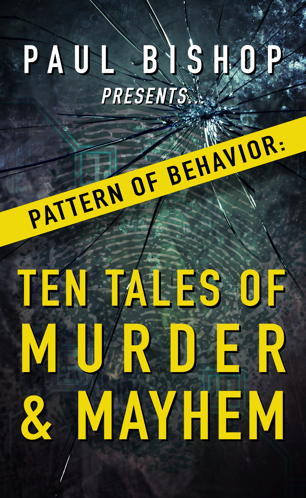

|

Pattern of Behaviorby Paul Bishop, Ben Boulden, Richard Prosch, Nicholas Cain, Christine Matthews, Robert J. Randisi, Brian Drake, Nicole Nelson-Hicks, L.J. Martin, Eric Beetner
Ten crime stories follow cops, private eyes, criminals, and desperate innocents into Hollywood murder, cold cases, mob strongholds, fixed fights, and deadly family betrayals. Every decision carries a price, and justice and revenge are separated by a razor's edge. About the Collection Violence is rarely random. It leaves a pattern. Patterns reveal who we are, what we fear, and how far we will go when greed, obsession, vengeance, or desperation takes control. They can lead a detective to a killer, lure an honest man into corruption, or turn an ordinary grievance into an excuse for murder. In these ten tales of murder and mayhem, cops, private eyes, criminals, and desperate innocents confront the choices destined to define them. LAPD homicide detective Fey Croaker investigates a seemingly open-and-shut rape and murder, only to uncover a Hollywood tangle of ambition, deception, and jealousy. A tackle box found at a Nebraska estate sale reopens a forty-two-year-old serial-murder case. A skeleton discovered among prehistoric bones forces a retired cop to reckon with a secret buried for decades, while a private investigator searching for a kidnapped child finds her own troubled family drawing her into a carefully calculated nightmare. Elsewhere, a disgraced FBI agent hunts stolen casino chips, a stylish 1920s private eye stalks a killer behind America's first Atlantic City beauty pageant, and a struggling boxer accepts money to fix a fight before discovering rival mobsters expect opposite outcomes. Featuring stories by Paul Bishop, Ben Boulden, Richard Prosch, Nicholas Cain, Christine Matthews, Robert J. Randisi, Brian Drake, Nicole Nelson-Hicks, L.J. Martin, and Eric Beetner, Pattern of Behavior enters the shadows where justice and revenge are separated by a razor's edge, every decision carries a price, and the deadliest patterns are recognized too late.
Get Your Copy →
|